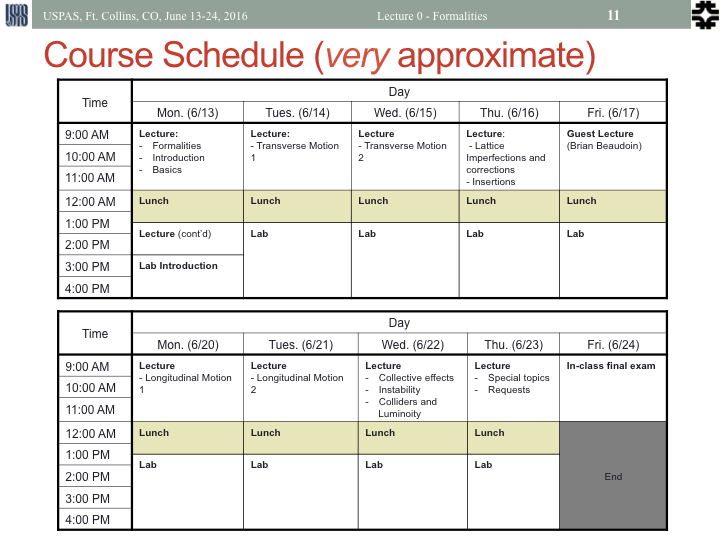

USPAS Fundamentals of Accelerator Physics
June 13-24, 2016, Ft. Collins, CO
Sponsored by Colorado State University
Contents
General

Course catalog page can be found here.
Course personnel:
Text and Background Material
The primary text for the course is Syphers and Edwards "An Introduction to the Physics of High Energy Accelerators", which will be provided for the students.
There are some good examples on the final exams from the "Accelerator Physics" course:
Software
This course will use the MADX and G4Beamline programs for a couple of the homework problems.
MADX is a standard program for accelerator modeling. It is
supported for Windows, MACOs, and most linux systems. You can
download it from the CERN site here.
G4Beamline is a scripted version of the GEANT4 simulation package,
which is starndard for HEP detector simulation. You can download
the program here.
It is supported for Windows, MACOs and linux. The first time you
run the program, it will download several Gb of data the GEANT needs
for simulation.
The output of G4Beamline is in ROOT files. If you are familiar
with ROOT, you make analyze them directly. Otherwise, a GUI
HistoRoot program can be found here. Note that HistoRoot requires a specific version of ROOT, which can be downloaded at the same location.
Lectures
- Lecture 0: Formalities (PPT, PDF)
- Lecture 1: History and Overview (PPT, PDF)
- Lecture 2: Basics, E&M, Relativity, and Multipole Expansions (PPT, PDF)
- Lecture 3: Transverse Motion (PPT,PDF)
- Lecture 4: Lattice Imperfections and Off-momentum Particles (PPT,PDF)
- Lecture 5: Insertions (PPT,PDF)
- Lecture 6: Longitudinal Motions (PPT, PDF)
- Lecture 7: Tricks of the Trade (PPT, PDF)
- Lecture 8: Synchrotron Radiation and Light Sources (PPT,PDF)
- Lecture 9: Space Charge and Beam-beam effects (PPT,PDF)
- Lecture 10: Floquet Coordinates, Resonance, and Coupling (PPT,PDF)
(stay tuned for the rest...)
Comments:
- Lectures were made with PowerPoint on a Mac. After an annoying amount of effort, I think
I've solved all the imcompatibility problems with PowerPoint on
Windows. Please let me know if you have problems. No promises for
LibreOffice (mostly legible, but ugly).
- If you want to recycle any of these slides, be aware that
mathemetical equations were made with MathType. If you don't have
that installed, you will be able to view but not edit them.
Guest Lectures
Special Topics
Labs
Lab handouts can be found here.
Homework and Final
Homework will be assigned each day, with the exception of:
- Friday, June 17 (no homework over the weekend!)
- Thursday, June 23 (study for final)
Unless otherwise specified, homework will be due the next morning.
Final took place in class June 24:
Grading
Grades is based on:
- Homework: 50%
- Labs: 30%
- Final: 20%
Final results (auditors not included in statistics):
(last modified June 29, 2016 by Eric Prebys)
{kind=link}
{kind=link}
{kind=link}
{kind=link}
{kind=link}
{kind=link}
{kind=link}